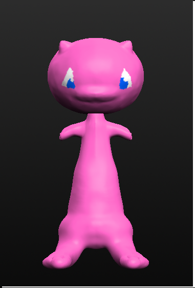

This is a website for things I intend on making.
1. In this project we planned to create a Pokemon-style video game in Construct 2
2. We planned on making a Pokemon-style game as mentioned before but on a much simpler scale but still using the combat system of the original game.
3. What we achieved was quite different from what we originally planned. We ended up with a more "Zelda-style" game where you play as Waluigi defeating ghost with his tennis racket (I’m not sure how that happened either).
4. Some problems we encountered were mainly due to a lack of knowledge in the Construct 2 engine but to be more specific we usually got tripped up by animating sprites and giving the enemies better A.I.
5. To be critical of our project there where a few good things that we did well but there is also definitely room to improve. A few things we could have done were:
>Made our own sprites
>Gotten more familiar with the animation software
>used our time more efficiently and used the planner more often
>asked for help I bit more
Although there was some things we did quite well including:
> Made a game that actually works to some degree
> Worked well within the restrictions of the free version of Construct 2
> Worked well as a team and helped each other on the project
1. In this project we used Sculptris to make 3D models
2. Our plan was to make several different designs in the Sculptris engine of a fairly large variety.
3. We achieved something quite similar to what we set out to do including
> A design of Mew and Jigglypuff from Pokémon
> An almost finished design of Squidward from Spongebob
4. We encountered a few problems along the way mainly from Sculptris’ weird saving system where you are unable to undo actions past a certain point or after switching tools.
5. Critically speaking there where a few things we did fairly well but, just like our last project there was definitely room for improvement such as:
> Used a few more tutorials to help flesh out our knowledge of each tool.
> Put a little more effort into the painting of our projects.
> Made more use of detail and gotten used to the Sculptris camera which tripped us Up a lot.
